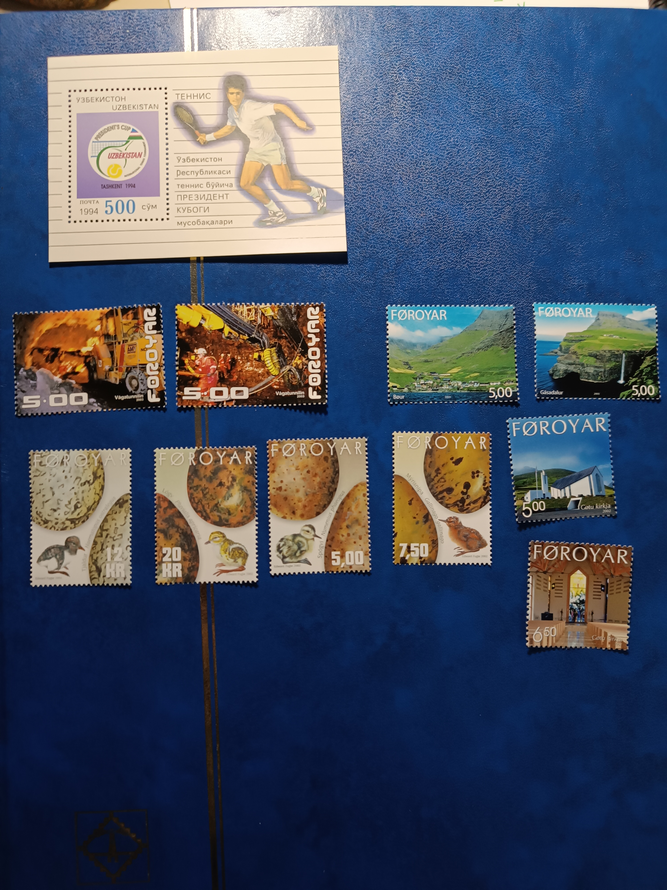
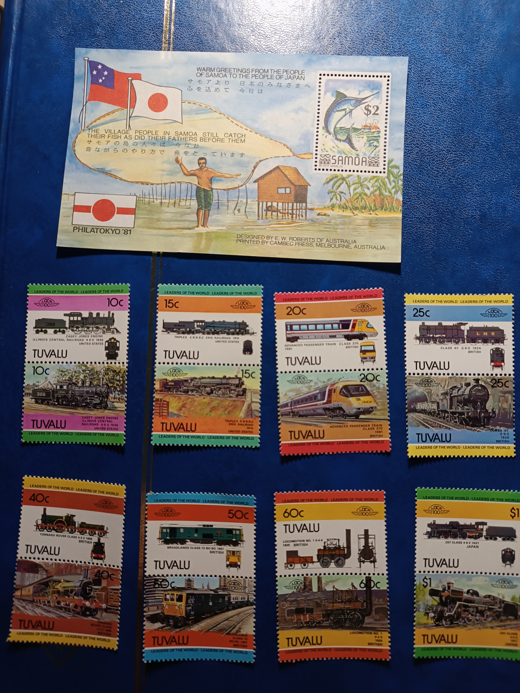

NOVES ADQUICIONS. SEGELLS DE ILLES FEROE I UZBEKISTAN

Nous segells d'un dels països o territori autònom preferits, Illes Feroe. Una de les sèries aconseguides, sempre ha sigut una de les meves preferides, que
son els ous i les seves cries, segons l'especie. Els seus codis MI (Michel) són : 427-430. Una altre sèrie es la construcció de l'esglèsia de
Norðragøta/Gøta mab els codis MI (Michel) : 433-434. Un altre sèrie està dedicada a la construcció d'un tunel per sota de la mar, que conecta les illes
de Streymoy i Sandoy, els seus codis MI (Michel) són : 446-447. Per últim, la darrera sèrie esta dedicada als paisatges de Feroe i els seus codis MI (Michel)
són : 460-461. Takk Føroyar.
El segell d'Uzbekistan, és una fulla commemorativa, d'un torneig de tenis que es va disputar a la capital uzbeka, Toshkent/Tashkent. El seu codi
MI (Michel) és BL3.
NOVES ADQUICIONS. SEGELLS DE TUVALU I UNA FULLA DE SAMOA

He aconseguit una sèrie de segells de Tuvalu, que son unes illes situades al Pacífic Sud. Aquestos segells són de l'any 1984 i el tema son locomotores.
Per ordre de valor facial, els seus codis MI (Michel) son : (2*10¢) 228-229, (2*15¢) 230-231, (2*20 ¢) 232-233, (2*25¢) 234-235, (2*40¢) 236-237,
(2*50¢) 238-239, (2*60¢) 240-241 y (2*1 $) 242-243.
La fulla de Samoa, primer segell d'aquest país del Pacífic, es una fulla commemorativa d'una exposició fil-latèlica a Tokio. El seu codi MI (Michel) és
BL25.